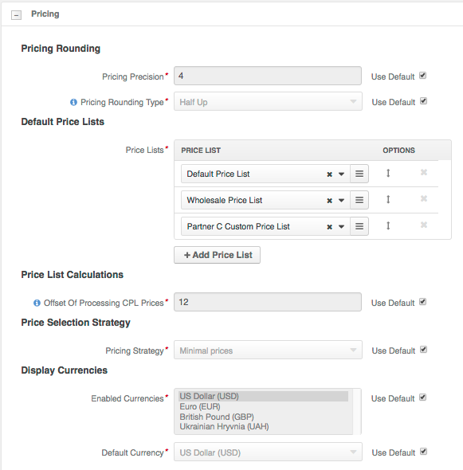
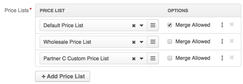

Global Pricing Configuration¶
Global pricing configuration helps you:
- Set price precision and price rounding strategy.
- Configure default price lists, their priority and merge strategy to get the necessary resulting combination of prices that are shown on the websites and for the customers whenever their price list settings fall back to the system default.
- Specify an offset in hours that helps launch combined price list recalculation before price change is activated.
- Enable all or some currencies from the allowed currencies list to be used in OroCommerce front store and management console.
- Select the currency that is shown by default in the OroCommerce front store and management console.
Note
The website level configuration has higher priority and overrides these configuration settings. Customer group configuration overrides configuration on the website level. Custom configuration on the customer level has the highest priority.
To change the default global pricing settings:
- Navigate to System > Configuration in the main menu.
- Select Commerce > Catalog > Pricing in the menu to the left.
Note
For faster navigation between the configuration menu sections, use Quick Search.
The Pricing page opens. It contains the following information:

Pricing Precision — The number of digits that are allowed in the fractional part of the price (e.g. precision of 4 enables your sales manager use prices like $10.0001).
Pricing Rounding Type — The rounding type that is used when calculated product price has more digits in the fractional part than allowed by the Pricing Precision value. Please use one of the following options:
- Ceil — Rounds to the nearest integer that is not less than the price with the fractional part (e.g. 23.5 is rounded to 24; 23.3 is rounded to 24; 23.7 is rounded to 24)
- Floor — Rounds to the nearest integer that does not exceed the price with the fractional part (e.g. 23.5 is rounded to 23; 23.3 is rounded to 23; 23.7 is rounded to 23)
- Half Down — Uses ceil rounding for the prices with fractional part that is bigger than 0.5 and uses floor rounding for the prices with a fractional part that is that lower than or equal to 0.5 (e.g. 23.5 is rounded to 23; 23.3 is rounded to 23; 23.7 is rounded to 24)
- Half Up — Uses ceil rounding for the prices with fractional part that is bigger than or equal to 0.5 and uses floor rounding for the prices with a fractional part that is that lower than 0.5 (e.g. 23.5 is rounded to 24; 23.3 is rounded to 23; 23.7 is rounded to 24)
- Half Even — Uses ceil rounding for the prices with fractional part that is bigger than 0.5, uses floor rounding for the prices with a fractional part that is that lower than 0.5, and rounds the price to the nearest even integer when the price fraction is exactly 0.5 (e.g. 23.5 is rounded to 24; 23.3 is rounded to 23; 23.7 is rounded to 24)
Price Lists — A set of default price lists that may be used for price calculation. Website, customer group, and customer may have their own set of price lists that overrides the default configuration.
When the Minimal Price is selected as the pricing strategy, OroCommerce looks up the minimal price for various tiers of amount and the product units:

When the Merge by priority is selected as the pricing strategy, the OroCommerce considers the price list priority and Merge Allowed flags to look up all the available price per units and per tiers of amount:
Note
Price lists with higher priority are on top.
Offset Of Processing CPL Prices — An offset (in hours) from the scheduled price change that determines how early the price list recalculation and reindex should happen to prepare the actual prices in the OroCommerce front store for the scheduled launch. Delayed recalculation helps spread resource-consuming tasks in time and launch them only when the price is going to be used soon. This eliminates unnecessary intermediate recalculation every time the price is updated between the time price list schedule is added and the time when recalculation is expected to start (considering the offset from the scheduled launch). If you update the price once a week, set the offset to 40 (hours). If you update prices more frequently, set the value that approximately matches the delay between the updates of the price information. It may be aligned with the data synchronization process between your OroCommerce and the external ERP system. For continuos price updates use the minimal recommended offset value of 0.083 (5 minutes).
Pricing Strategy — The strategy that is used for a price lookup.
OroCommerce may search for the most close match of the product price in the selected units and currency for the requested product quantity in one of the following ways:
Using Minimal Price strategy — From the default or customized set of price lists, OroCommerce collects all products prices that match product units, currency, and the requested product quantity, and selects the minimal price per tier and per unit as the one to show to the customer user:
Using Merge by priority strategy — OroCommerce walks through the default or customized set of price lists starting with the price list of the top priority and moving along to those with the lower priority.
When the product price is initially found in the price list with the Merge Allowed option enabled, the price and the price list priority is collected for further evaluation and merge. Prices for other units and for other tiers of product quantity may be collected form the same price list and from other price lists with the Merge Allowed option enabled. The tier/unit prices with the highest priority are shown to the customer user.
When the product price is initially found in the price list with the Merge Allowed option disabled, OroCommerce collects the product prices for all units and for all tiers of product quantity from this price list only. Other price lists are not taken into account, as price merge is not allowed. The units and tiers of quantity where the price is missing are hidden from the customer user.
Enabled Currencies — The subset of allowed currencies that is available for the customer user by default.
Note
The website level configuration has higher priority and overrides the global configuration settings.

Default Currency — The currency that is used by default to show prices in the front store.
Note
The website level configuration has higher priority and overrides the global configuration settings.
To customize the option configuration:
- Clear the Use Default check box next to the option.
- Select or type in the new option value.
To add a price list to the default price lists:
Click + Add Price List and select the price list in the newly added line. After you start typing the price list name, the list of suggestions that match your entry appears. Press Enter or click the suggested value to add the price list.

Note
The price list is appended to the bottom of the list and, initially, has lower priority then existing price lists. Adjust the price list priority if necessary and specify whether the merge is allowed (the later is shown only for the Merge by priority price selection strategy).
To control the way prices are merged into the combined price list, select or clear the Merge Allowed option for the price lists.
When merge is allowed, the prices for the tiers and units that are missing in the higher priority price list may be covered by the prices from the lower priority price lists that should support price merge too.
To delete a price list from the default price lists, click the Deactivate at the end of the corresponding row.
To change the price list priority, click and hold the Sort icon, and drag the price list up or down the list.
To roll back any changes to the currency settings, click Revert on the top right.
- Click Save Settings.